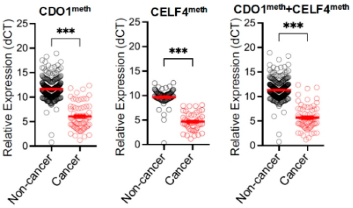

1Background & Objective
- Gap: no reliable screening test for endometrial cancer; invasive assessment is costly & fails in 11% postmenopausal.
- Objective: validate epiHERA® (CDO1/CELF4 methylation of cervical scrapings) for EC detection & triage.
2Study Design & Cohort
629
outpatient sampling
46
hysterectomy
69
EC (10.2%)
689
recruited
14
excluded
218
Pap smear done
- Setting: Prince of Wales Hospital, HK; prospective, Jan 2023 – Nov 2024.
- Indications: abnormal uterine bleeding · imaging suspicion · hyperplasia · cancer.
- Assay: CDO1 + CELF4 methylation on ThinPrep cervical scrapings (epiHERA®).
- Reference: same-day endometrial histology (outpatient or hysterectomy).
- Exclusions: 12 sampling failure + 2 invalid assay → 675 analyzed.
- Follow-up: 3 women later EC + 1 cervical cancer at 1–4 months.
- Statistics: accuracy/Se/Sp/PPV/NPV · ROC · Cohen's kappa.
0.92
AUC
0.85
Kappa
0.8%
FNR
- Reuse: ThinPrep samples also used for cytology — no extra collection.
- Limit: single-center; prospective but non-randomized.
Sensitivity & NPV highest when endometrium thin; accuracy lower with hyperplasia.
3Performance Matrix
84.1%
Sensitivity
98.8%
Specificity
89.2%
PPV
98.2%
NPV
97.3%
Accuracy
0.85
Kappa
0.8%
FNR (outpatient)
4ROC — Combined Methylation

Fig. ROC — combined CDO1 + CELF4 methylation (AUC 0.92).
0.92
AUC (excellent)
0.85
Kappa
0.8%
FNR
- Highly specific: 98.8% — few false referrals to invasive tests.
- Low FNR: negative result safely defers endometrial assessment.
- Kappa 0.85: near-perfect agreement with histology.
- Balanced cut-off: AUC 0.92 — excellent discrimination.
5False Positives — Early Detection Signal
- All 7 FP tied to genital-tract neoplasia — methylation precedes histology.
- Triage value: fewer invasive tests, early-stage catch.